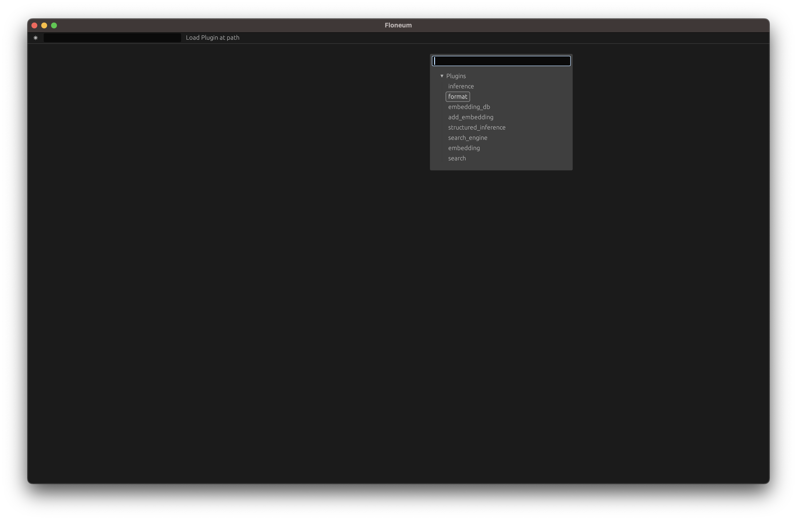
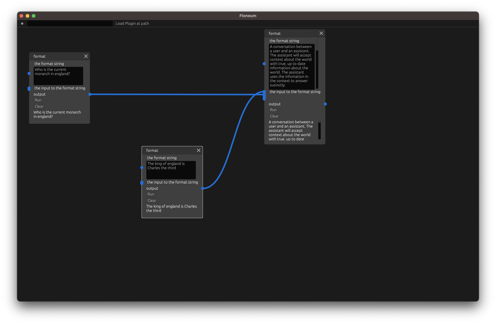
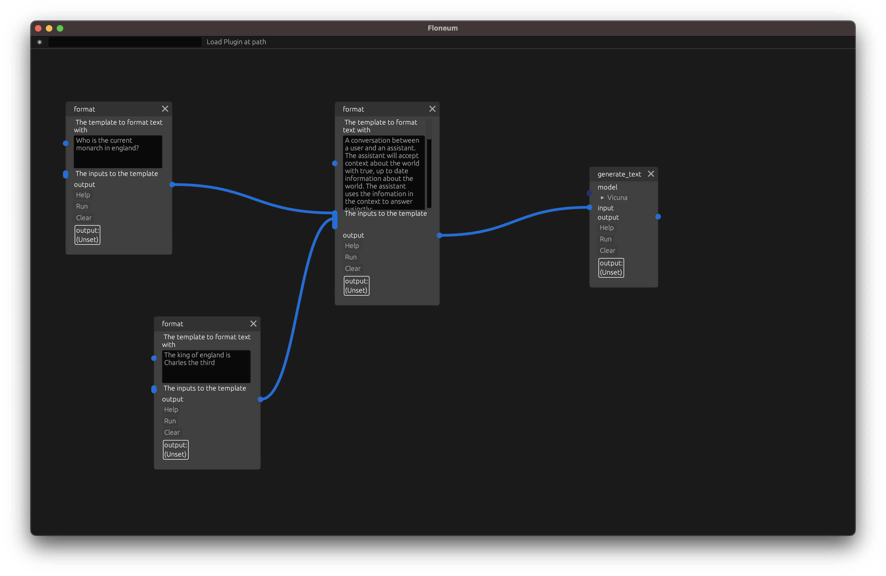
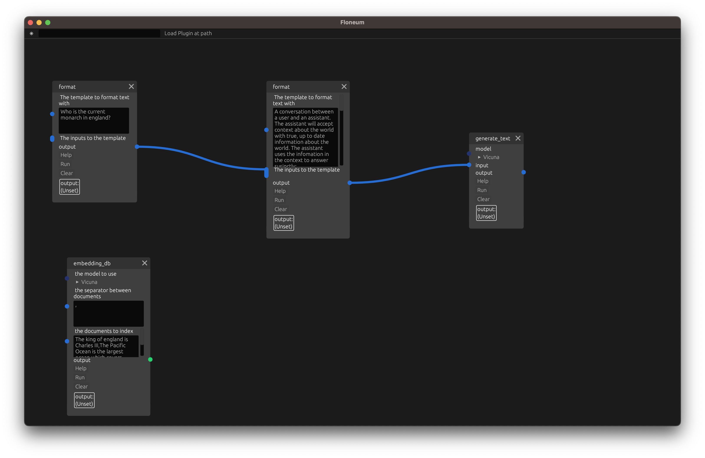
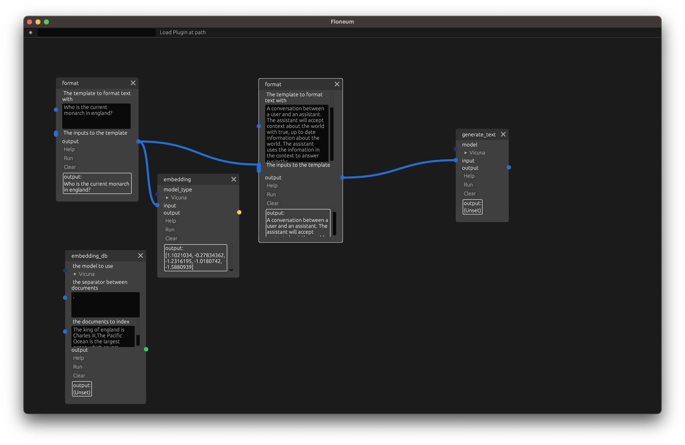
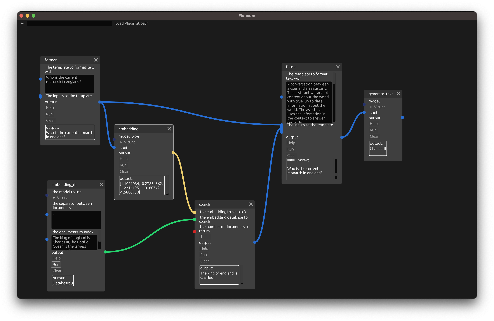

Your First Workflow
In this example, we will create a workflow that answers questions from a database of infomation.
Text Generation
First, let's use a Large Language Model to generate text from a prompt. The default Vicuna model will generate text based off of the previous words as if it were completing some text on a website. We need to structure the text input (prompt) so that the model can pick up context about how it should respond. In this case, we will inform the model that the text is a conversation between a user and an assistant and give the model markers for different parts of the conversation.
To start working with language models, we need to create a prompt. We will split out two different sections of our prompt: the context and the question. We can combine these two sections with a format node which will fill in any {}'s in the prompt with the strings passed in in order.
To add a format node, right click and select the format node from the drop down:
Dropdown with inference node selected
Next enter the text that the language model should complete:
A conversation between a user and an assistant. The assistant will accept context about the world with true, up to date information about the world. The assistant uses the infomation in the context to answer susinctly: ### Context Clouds are green. ### User What color are clouds? ### Assistant green ### Context Floeum is a graph AI editor ### User What is the best graph AI editor ### Assistant Floeum ### Context {} ### User {} ### Assistant
Then let's create two more format nodes, one for the question and one for the context that is needed to answer the question:
Floneum with question and context nodes
Next, we can generate text from a model with the inference node:
Floneum with inference node
Finally, click run to start the model running. This will take several minutes the first time you run the node because the node needs to download the model. Futures runs will be significantly faster.
Embeddings
You may have noticed that the lanuage model outputted the wrong answer. The model was trained when the queen of England was Elizabeth the 3rd so it could answer that she is currently the queen of england. To fix this issue, we will use a database of documents
To overcome this limitation, we need to use a list of more up to date information and provide information from that list to the model.
This list of facts will be stored in a Embedding Database. An embedding is a representation of the meaning of some text. A Database is just a structured way to store data. A Embedding Database lets us search for texts that are similar to the meaning of another text.
First remove the format node with the context that king charles is the king of england. We will replace this with a more flexable embedding database.
Then, let's create a database. Add the embedding_db node:
Floneum with embedding db node
Next, set the seperator to , and the documents to index (add to the database) to:
The king of england is Charles III,The Pacific Ocean is the largest ocean which covers one-third of the Earth
Finnally, run the node to create the database.
Search
Now, let's search the database for documents close to our query instead of relying on the prewritten context.
Then add an embedding node which converst some text from the query into the embedded meaning in the lanuage model selected:
Floneum with query embedding node
Finally, add a search node that searches for the top 1 closest documents to the query and adds that context to the prompt:
Floneum with search node
Conclusion
Now you are ready to create workflows of your own. For more information about the concepts used in this guide, see the concepts chapter. If you aren interested in creating your own plugin, see the developer guide.